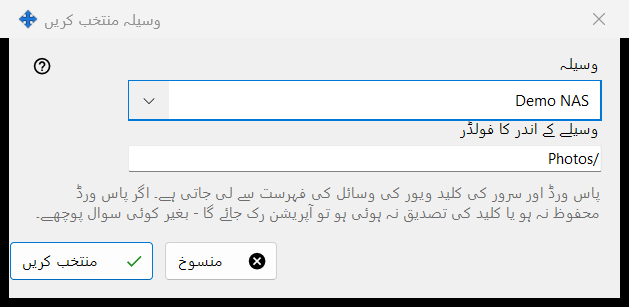
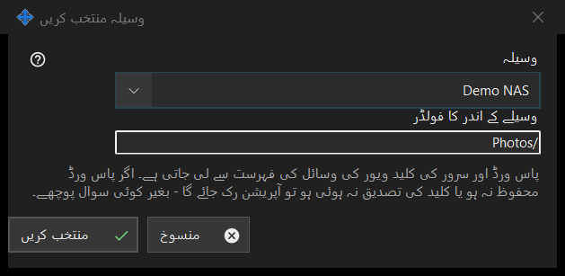

وسیلہ منتخب کریں
یہ کس مقصد کے لیے ہے
ویور کی وسائل کی فہرست سے ایک وسیلہ شیڈول شدہ آپریشن کے ماخذ یا منزل کے طور پر چنتا ہے۔ یہ شیڈول شدہ آپریشن کی ونڈو میں ماخذ یا منزل کے برابر والے وسیلہ.. سے کھلتا ہے۔


اس ترتیب میں
- وسیلہ فہرست میں وسیلہ چنیں۔
- وسیلے کے اندر کا فولڈر دیکھیں یا بدلیں؛ یہ وسیلے کے روٹ فولڈر سے شروع ہوتا ہے۔
- منتخب کریں دبائیں۔ منسوخ پچھلی جگہ کو برقرار رکھتا ہے۔
عناصر
وسائل کی فہرست
ویور کی فہرست سے صرف SFTP سرور اور نیٹ ورک فولڈر پیش کیے جاتے ہیں، نام کے مطابق ترتیب دیے ہوئے؛ دوسری اقسام کے وسائل نظر نہیں آتے۔ اگر کوئی نہ ہو تو ونڈو کہتی ہے: وسائل کی فہرست میں کوئی موزوں وسیلہ موجود نہیں۔ ویور میں ایک SFTP سرور یا نیٹ ورک فولڈر شامل کریں۔ اور منتخب کریں غیر فعال رہتا ہے۔ وسیلہ شامل کرنا یا اس پر دوبارہ اعتماد کرنا ویور میں ہوتا ہے؛ یہ ونڈو کوئی کنکشن نہیں بناتی۔
وسیلے کے اندر کا فولڈر
فولڈر منتخب وسیلے کے روٹ کے اندر ہونا چاہیے، ورنہ آپریشن کی ونڈو میں محفوظ کریں اسے مسترد کر دیتا ہے۔ دوسرا وسیلہ چننے پر خانہ اس وسیلے کے روٹ سے دوبارہ بھر جاتا ہے۔
بغیر سوالات کے رن
پاس ورڈ اور سرور کی کلید ویور کی وسائل کی فہرست سے آتے ہیں۔ رن کچھ نہیں پوچھتا: اگر پاس ورڈ محفوظ نہ ہو یا سرور کی کلید کی تصدیق نہ ہو تو آپریشن رک جاتا ہے اور ہسٹری وجہ بتاتی ہے۔ صرف پڑھنے کے لیے وسیلہ منتقل کرنے یا حذف کرنے کا ہدف نہیں ہو سکتا، جس وسیلے کا روٹ PIN سے محفوظ ہو وہ مسترد کر دیا جاتا ہے، اور آرکائیو صرف عام فولڈر لیتا ہے۔
مینیجر کی ترتیبات · SFTP اشتراک کی ترتیبات · ایکسچینج سرور کی ترتیبات